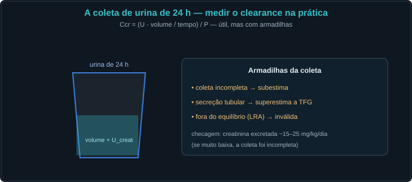
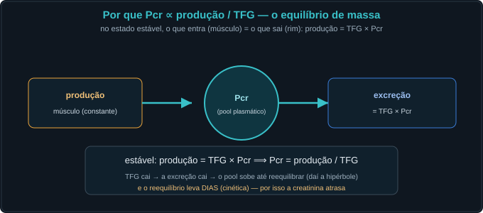
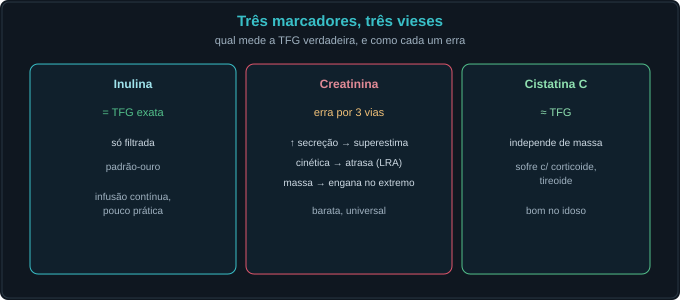
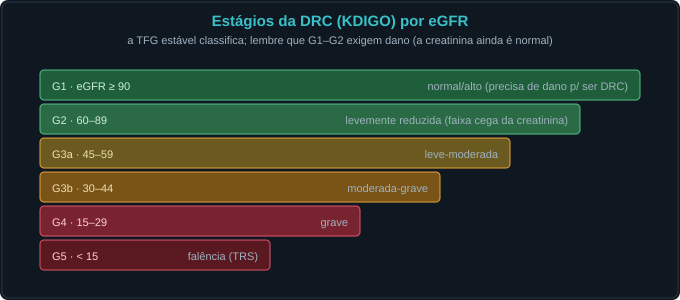
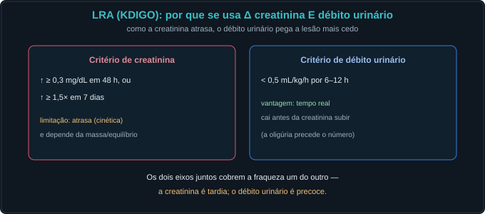

Conceito — medir a função renal, ilustrado
Medir a TFG é ler a homeostasia. Mas todo marcador tem viés. As
Fig. 1–13 voltam no Caso, na Trilha e na Avaliação (algumas reaparecem nos exercícios). Atribuição em
CREDITS.md (em curadoria).
1. O que é clearance — e a inulina como padrão-ouro
Clearance é o volume de plasma "limpo" de uma substância por minuto: C = U·V̇/P. Se a substância é só filtrada (não secretada nem reabsorvida), o clearance dela = TFG. A inulina é assim.



2. A hipérbole Pcr × TFG e a "faixa cega"
No equilíbrio, produção = TFG × Pcr ⟹ Pcr = produção/TFG. Como é uma hipérbole, perder metade da TFG (120→60) mal mexe a creatinina — a faixa cega.


3. As três mentiras da creatinina
(1) secreção tubular → o Ccr superestima a TFG; (2) cinética → na LRA a creatinina atrasa e subestima a lesão; (3) massa muscular → pouca massa esconde TFG baixa.


4. Estimar e comparar — eGFR, cistatina, marcadores
As fórmulas de eGFR usam idade/sexo como proxy da produção. A cistatina C independe de massa. Quando creatinina e cistatina discordam, suspeite da massa.



5. Aplicação — estadiar a DRC e detectar a LRA
eGFR estável estadia a DRC (KDIGO G1–G5). Na LRA, como a creatinina atrasa, usa-se também o débito urinário — que cai mais cedo.


Caso — oito atos, decida antes de revelar
Mulher de 82 anos, magra, internada. "A creatinina está normal (0,9), o rim está bem." Será?
Trilha socrática — treze perguntas que constroem o conceito
1. O que é clearance?
O volume de plasma depurado de uma substância por minuto: C = U·V̇/P. Se a substância só é filtrada, C = TFG.
2. Por que a inulina é o padrão-ouro?
É livremente filtrada e não é secretada nem reabsorvida → o que filtra é exatamente o que sai → clearance = TFG exata.
3. Por que Pcr ∝ 1/TFG?
No equilíbrio, produção = excreção = TFG·Pcr. Logo Pcr = produção/TFG — uma hipérbole.
4. O que é a "faixa cega" da creatinina?
Por ser hipérbole, perder metade da TFG (120→60) mal eleva a creatinina (0,8→1,5). Metade dos néfrons pode estar perdida com creatinina quase normal.
5. Primeira mentira: a secreção.
A creatinina é filtrada E secretada (~10–15%) → o clearance de creatinina superestima a TFG verdadeira.
6. Segunda mentira: a cinética.
Quando a TFG cai de repente, a creatinina sobe ao longo de dias (τ = Vd/clearance). Na fase aguda, o número atrasa e subestima a lesão.
7. Por que o τ é maior quando a TFG é baixa?
τ = Vd/clearance; com clearance menor, o pool reequilibra mais devagar → a creatinina demora ainda mais a refletir a TFG.
8. Terceira mentira: a massa muscular.
A creatinina vem do músculo. Pouca massa → pouca produção → creatinina baixa, que mascara uma TFG reduzida (idoso, amputado, caquético).
9. Como o eGFR tenta corrigir?
Usando idade e sexo como proxies da produção (CKD-EPI). Melhor que a creatinina crua, mas ainda pressupõe equilíbrio e produção típica.
10. Quando usar a cistatina C?
Quando a massa engana (idoso, sarcopênico, atleta) — ela independe de músculo. Cuidado com corticoide/tireoide.
11. Por que a LRA usa também o débito urinário?
Porque a creatinina atrasa; a oligúria (<0,5 mL/kg/h) cai em tempo real e pega a lesão mais cedo.
12. O que invalida uma coleta de 24 h?
Coleta incompleta (creatinina excretada muito baixa), secreção (superestima) e estar fora do equilíbrio.
13. Em que sentido isto é homeostasia?
Medir a TFG é medir a capacidade de manter o meio interno. O número (creatinina) é uma sombra — só vale lido pelo mecanismo que o produz.
Instrumento — a hipérbole creatinina × TFG
Os controles do Lab alimentam esta curva. O marcador laranja é o ponto de operação; veja a faixa cega à direita (TFG alta, creatinina quase plana) e a subida íngreme à esquerda.
Laboratório — mova a TFG, a massa e o tempo; veja a creatinina mentir
| Variável | Atual | Comentário |
|---|---|---|
| Creatinina atual (mg/dL) | — | o que o exame mostra |
| Creatinina no equilíbrio (mg/dL) | — | para onde vai |
| τ (dias) | — | rapidez de reação |
| Clearance de creatinina (mL/min) | — | > TFG (secreção) |
| eGFR creatinina (mL/min) | — | estimado |
| eGFR cistatina ≈ TFG (mL/min) | — | a verdade |
| Erro do eGFR (mL/min) | — | + = parece melhor que a verdade |